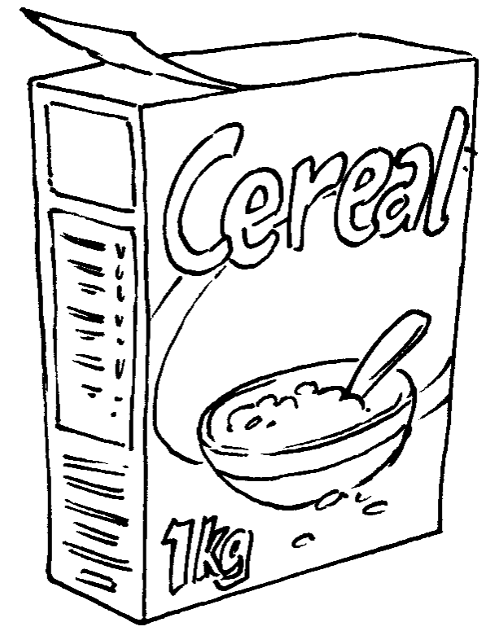
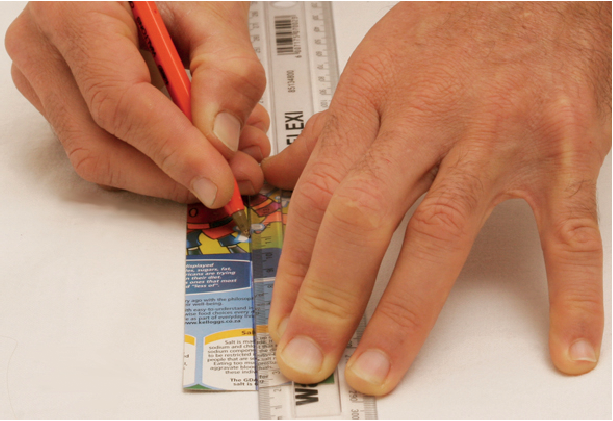

In die volgende twee weke gaan julle leer hoe papier hergebruik word. Julle sal ook geleer word hoe
om nuwe voorwerpe uit ou stukke karton te maak. Julle gaan julle eie verpakkingsmateriaal vir 'n
produk maak.
Figuur 1: Versamel weggooipapier en weggooikarton afsonderlik van ander vullis
Figuur 2: Om papier en karton te gebruik sonder om dit te herwin
Papier en karton is bioafbreekbaar. Dit doen nie skade aan die
natuur as dit weggegooi word nie. Dit kan ook verbrand word
om hitte of elektrisiteit te genereer, en geen giftige gas sal in die
proses vrygestel word nie. Om papier en karton te vervaardig
moet bome egter afgesaag word. As papier en karton hergebruik
word, hoef minder bome afgesaag te word.
Het jy geweet?
Die hergebruik van 54 kg koerantpapier maak dat een
minder boom afgesaag hoef te word.
Omtrent 40% van munisipale vaste afval is papier en karton.
Figuur: 3: Die gebruik van papier en karton, en die hergebruik daarvan
Het jy geweet?
Die gemiddelde persoon gebruik byna 50 kg papier en karton per
jaar.
Giftige chloorgas word gebruik om papier te bleik. Om te bleik
beteken om wit te maak. Die chloor kan gifgasse vorm, wat
dioksiene genoem word, en in die atmosfeer vrygelaat kan word.
Hoe word papier en karton gemaak?
'n Papierherwinningsfabriek maak nuwe papier of karton uit afvalpapier.
Hieronder word verduidelik hoe hulle dit doen. Jy kan ook herwinde papier by die huis maak.
Afvalpapier word met warm water en chemikalieë
gemeng. Dit word deur 'n masjien geroer en
opgekap om die klein, dun vesels waarvan papier
gemaak word uitmekaar te kry. Die masjien wat
die mengsel van water en papier meng en opkap
werk soos 'n voedselverwerker.
Die mengsel van opgekapte papier en water word
papierpulp genoem.
Figuur 4
Die pulp word deur 'n
sif geggoi. Ou gom en baie kort vesels gaan deur die sif. Lang, sterk vesels
bly agter in die sif. Hierdie vesels word dan in 'n
roertenk geplaas waar chemikalieë bygevoeg word
om die ink uit die pulp te verwyder.
Figuur 5: 'n Sif
Nuwe gom word by die pulp gevoeg. Wanneer
die herwonne papier vir skryfwerk of drukwerk
bestem is, word 'n hoeveelheid klei bygevoeg
om aan die papier 'n gladder oppervlak te gee.
Die pulp gaan na 'n papiervervaardigings-
masjien waar dit tussen twee rollers
gepers word om dit die vereiste dikte te
gee, en die water daaruit te pers.
In plaas daarvan om 'n lang tyd te wag vir die papier om uit te droog kan dit
vinniger gedroog word deur die papier te verhit en warm lug daaroor te blaas.
Sodra die papier droog is, word dit in die regte groottes gesny en verpak.
Papiervesel kan tot sewe keer hergebruik word, maar tydens die proses breek die
vesels elke keer in korter en korter stukkies. As die papier te veel kere hergebruik
word, sal die vesels te kort en swak raak om weer papier daarvan te maak.
Gevallestudie: papierherwinning
Waarvan word karton gemaak?
Hoekom kan papier nie meer as sewe keer hergebruik word nie?
Wat sal gebeur as die gate in die sif te groot is?
Wat sal gebeur as die gate in die sif te klein is?
Huiswerk vir die volgende les
Versamel 'n paar ou pilboksies en
bring hulle na die volgende les. Probeer
minstens twee sulke boksies kry. As
jy nie 'n pilboksie kan kry nie, bring
'n ander klein boksie wat toegemaak kan word
. nadat jy dit oopgemaak het. Soms word speserye in sulke boksies
verpak, asook sommige gloeilampe.
Veiligheidswaarskuwing
Moenie pille uit pilboksies verwyder nie. Daar
is etikette op pilboksies wat sê watter pille dit
is en hoe hulle gebruik moet word. As daardie
etikette verlore raak, weet mens nie watter
medisyne om te neem, en hoeveel daarvan nie.
Vra jou ouers of enige ander volwassene vir 'n
leë pilboksie.
Figuur 6: Deel van 'n ou papiervervaardigingsmasjien
Hoe word papier en karton hergebruik?
Neem een van die klein boksies wat jy skool toe gebring het. Kyk goed na al die
kante van die boksie. Maak dan die boksie oop sodat jy binne kan sien, maar
moenie die boksie skeur of sny om dit oop te maak nie. Terwyl jy na die boksie
kyk, probeer dink oor hoe hierdie boksie uit 'n plat stuk karton gemaak is.
Die volgende woorde beskryf verskillende dinge van 'n boksie:
'n
Vlak is een van die plat oppervlakke wat van
die buitekant af gesien kan word.
'n
Rand is die lyn waar twee vlakke ontmoet.
'n
Hoek is waar drie vlakke by 'n enkele punt
bymekaarkom. By hierdie punt is daar ook drie
rande wat bymekaarkom.
'n
Oorvouklap is 'n addisionele stuk wat aan 'n
vlak geheg word en gebruik word om die boksie
te help toehou. Dit kan nie vanaf die buitekant
van 'n toegemaakte boksie gesien word nie.
Figuur 7: Die verskillende dele van 'n boksie
Dink oor die verskillende dele van 'n boksie
Hoeveel vlakke het die boksie?
Hoeveel rande het die boksie?
Hoeveel hoeke het die boksie?
Kyk na die twee tekeninge van die boksie hier onder. Die tekeninge is gemaak
deur van verskillende aansigte na die boksie te kyk. Op elke vlak van hierdie
boksie is 'n naam geskryf. Skryf dieselfde name op die verskillende vlakke van
jou eie boksie.
Figuur 8: Benaming vir die verskillende vlakke van 'n boksie
Uit hoeveel verskillende stukke karton is die boksie gemaak?
Daar is drie verskillende maniere waarop 'n rand in
'n kartonboks gemaak kan word.
Onafgebroke rande: Die karton word eenvoudig langs 'n lyn gevou.
Rand gemaak deur 'n oorvouklap te vou: Een
van die twee vlakke wat bymekaarkom het 'n
oorvouklap daaraan vas. Hierdie oorvouklap vou
onder die ander vlak in om die boks toe te maak.
Rand gemaak met 'n oorvouklap wat aan 'n ander vlak vasgegom word
: Dit is dieselfde as
'n rand wat met 'n oorvouklap gemaak is, maar
in dié geval word die oorvouklap permanent met
gom aan die ander vlak vasgehou.
Die verskillende soorte rande vir jou boks
Die foto's
hieronder wys verskillende
rande van 'n boks. Skryf onder elke foto watter soort rand gewys word.
Figuur 9
Hoeveel van die rande van jou boks is onafgebroke rande?
Hoeveel van die rande van jou boks is
gemaak met oorvouklappe wat nie gegom is nie?
Hoeveel van die kante van jou boks is
gemaak met oorvouklappe wat met gom vasgeplak is?
Wat is die totale aantal oorvouklappe wat
gebruik is om die boks te maak?
Huiswerk
Kry 'n ou kartonboks. Dit moet van
dun, soliede karton gemaak wees. Ontbytgraanbokse en bokse waarin kos|
verpak word, is gewoonlik van sulke karton
gemaak.
Maak seker die boks is nie van geriffelde karton gemaak nei.
Figuur 10: Bokse vir die
verpakking van kos word van
dun, soliede karton gemaak.
Sny die boks en vou dit plat. Die plat stuk
karton moet minstens so groot soos 'n A4-papiervel wees.
Herhaal die proses om nog twee kartonvelle te maak.
Kry minstens agt ou A4-papiervelle in die hande.
Die een kant van elke papiervel moet skoon wees,
want jy gaan daarop teken.
Bring volgende week die papier en die kartonvelle
saam na elkeen van jou Tegnologielesse. Jy gaan
hierdie ou papier en karton gebruik om papier- en
kartonbokse te maak.
Bring weer pilboksies, of ander klein boksies, na
jou volgende les.
Figuur 11: Groot bokse word
van geriffelde karton gemaak.
Teken die ontwikkeling van 'n boks
Sny die boks langs die vasgegomde rand oop. Vou dit oop en druk dit
plat. Ons noem dit die
plat plan of ontwikkeling van 'n boks.
Figuur 12: Jy kan 'n boks oopvou en platdruk om een plat stuk karton te maak.
Dit is die ontwikkeling van 'n boks.
Trek die ontwikkeling met
fyn lyne . op 'n stuk papier na. Trek dit na in die middel
van die skoon papiervel, sodat daar spasie rondom die nagetrekte ontwikkeling
oorbly. Jy kan die ontwikkeling oor en oor gebruik om na te trek, soos wat deur die
illustrasie hieronder gewys word.
Figuur 13: Die natrek van 'n figuur om met dieselfde prent baie Kerskaartjies te maak.
Toe jy die ontwikkeling van die boks nagetrek het, was jou lyne nie baie netjies
en reguit nie. Dit is hoekom jy die lyne fyn gemaak het. Gebruik nou 'n liniaal om
reguit, donker lyne oor die fyn lyne van jou ontwikkeling te trek. Die donker lyne
wys waar die papier gesny moet word.
Moenie om enige ander rede donker lyne trek
nie, want jy kan later iets afsny wat jy nie moes afsny nie!
Wys met strepieslyne
waar die papier gevou gaan word.
Sny nou jou ontwikkeling uit.
Moenie met die strepieslyne langs sny nie, want hulle is
vir voue bedoel.
. Vou die ontwikkeling om 'n boks te vorm.
As jy per ongeluk iets afgesny het wat jy nie moes afsny het nie, moenie
bekommerd wees nie. Die meeste mense maak foute as hulle vir die eerste keer
probeer om 'n boks te ontwerp en uit te sny. Leer egter uit jou foute. Vra jouself
wat jy volgende keer behoort te doen om die boks reg te maak, of selfs beter.
Huiswerk
Maak 'n nuwe papiermodel van jou boks. Maak hier keer 'n netjieser een.
Dink sorgvuldig voordat jy jou ontwikkeling begin uitsny, om seker te maak
dat jy nie iets afsny wat nie afgesny moet word nie.
Onthou dat die papiermodel van jou boks uit net een papiervel gemaak moet word.
Bring die kartonboks wat jy in hierdie les
oopgesny, ontvou en platgedruk
het, asook die papiermodel wat jy van hierdie boks gemaak het, na die volgende les.
Onthou om volgende week die papier- en kartonvelle
wat jy oor die naweek in die hande gekry het na elke les saam te bring.
Maak jou eie boks
Leer die geheime
Jy het 'n papierboksie gemaak en nou gaan jy
voorbereidings tref om met die gebruik van
dieselfde ontwerp 'n sterker boks uit karton te maak.
Dit is moeiliker om karton te vou, en dik karton
kan kraak as jy dit vou. Jy moet eers die
geheim leer
om karton te vou, asook hoe om twee stukke karton
met gom aanmekaar te plak. Jy sal dit op so 'n manier
moet doen dat die gom gou droog word en die las sterk sal wees.
Hierdie week gaan jy 'n kartonboks maak. Jy moet egter eers 'n paar
werksgeheime leer.
Mense wat tegnologiese werk doen, noem hierdie geheime tegnieke. Dit maak sin dat die
woord tegnologie soortgelyk is aan die woord "tegniek".
Hoe om karton vas te lym
Jy gaan twee stukke karton met wit houtlym aanmekaar plak. Eksperimenteer eers
so bietjie om vas te stel of dit beter is om baie lym te gebruik, of net 'n bietjie lym.
Plak twee klein stukkies karton met 'n
dik lymlaag tussen hulle aanmekaar. Druk
die twee stukkies karton twee minute lank
teenmekaar, en laat dit dan los. Het die gom
droog geword? Probeer om die twee stukkies
karton versigtig uitmekaar te trek. Is die las
sterk?
Figuur 14: Met baie lym
Probeer nou twee ander stukkies papier
aanmekaar lym. Gebruik hierdie keer baie
min lym. Sit net 'n druppel gom op die karton
en versprei dit met jou vinger. Houtlym is
nie giftig nie en jy kan dit met water afwas.
Die karton lyk nat en blink. Dit moenie wit
lyk soos die lym nie. Druk die twee stukkies
karton saam vir twee minute en laat dit dan
los. Het die gom droog geword? Probeer om
die stukkies karton versigtig uitmekaar te
trek. Is die las sterk?
Figuur 15: Met min lym
Hoe om karton te vou
Om karton teen 'n hoek van
90° te vou moet jy eers die
volgende eksperiment doen om te sien wat die beste
tegniek is.
Vou 'n reghoekige stuk karton in die helfte.
Gebruik 'n dik stuk karton, soos die soort waarvan
ontbytgraanbokse gemaak word. Die lengte van die
vou moet minstens 10 cm wees. Sny drie stukkies
karton wat jy op verskillende maniere in die helfte
gaan vou.
Figuur 16: Maak 'n vou sonder
om eers 'n groef te maak.
Trek 'n potloodlyn aan die binnekant van die eerste
stuk karton en vou die karton dan langs daardie lyn.
Vou dit heeltemal plat en gebruik die steel van jou
potlood om die vou skerp te stryk. Vou dit dan terug
na 'n hoek van 90°.
Figuur 17: Gebruik die potlood se steel om die vou skerp te stryk.
Om die tweede stukkie karton te vou, maak eers 'n
groef aan die buitekant van die karton. Sit jou liniaal
op die plek waar jy wil hê die groef moet wees en trek
dan 'n lyn met 'n balpuntpen. Druk hard met die pen
sodat jy 'n groef in die karton maak. Hou die liniaal
styf vas, sodat dit nie beweeg terwyl jy die lyn trek nie.
Gaan die lyn 'n paar maal oor om die groef dieper te
maak. Vou die karton met hierdie groef langs. Vou dit
plat en gebruik die steel van jou potlood om die vou
skerp te stryk. Vou dit dan terug na 'n hoek van
90°.
Figuur 18: Maak 'n vou deur eers 'n groef aan die buitekant te maak.
Om die derde stukkie karton te vou, maak eers
twee groewe aan die binnekant van die karton. Maak
elke groef op dieselde manier as voorheen. Die twee
groewe moet parallel wees en 1 mm tot 2 mm van
mekaar af. Vou die karton al langs hierdie groewe. Vou
dit plat en gebruik die steel van jou potlood om die
vou skerp te stryk. Vou dit dan terug na 'n hoek van
90°.
Figuur 19: Maak 'n vou deur eers twee groewe aan die binnekant te maak
Kyk nou goed na elkeen van die drie voue. Is die vou
netjies? Is daar enige krake aan die buitekant van die
vou? Was dit maklik of moeilik om die vou te maak? Is
die vou presies waar jy wou gehad het dit moet wees?
Watter manier van vou is volgens jou die beste?
Jou finale boks
Gebruik die kartonboks wat jy ontvou en platgedruk het om dieselfde ontwerp
op 'n plat stuk karton na te trek. Kyk bietjie na figuur 12 op bladsy 132. Gebruik
fyn lyne. Teken weereens die gelymde vouklap waar dit oorspronklik aan die stuk
karton vas was.
Doen dieselfde as wat jy gedoen het om die papiermodel van die boks te maak.
Gebruik egter hierdie keer die beste tegniek om 'n vou in die karton te maak.
Wanneer jy die karton gesny en gevou het, toets eers of dit 'n boks sal maak, en
dat al die oorvouklappe daar is. As dit korrek is, lym dan die een oorvouklap vas
aan die vlak waaraan dit vasgelym moet word. Gebruik die regte hoeveelheid lym.
As jy in die les nog tyd oor het, voltooi ook die volgende aktiwiteit.
Nog iets ekstra wat jy kan doen om te sorg dat jou boks beter toemaak
Kyk goed na die oorvouklappe
op die pilboksie. Jy sal klein
snytjies in party van die
oorvouklappe sien. Wat dink
jy is die doel van hierdie klein snytjies?
Maak 'n nuwe kartonboksie, maar maak hierdie keer ook daardie klein snytjies.
Figuur 20: Die klein snytjies in die oorvouklap wat gebruik word om die boksie oop en toe te maak.
Maak 'n potloodboksie
Ontwerp 'n nuwe boks met 'n ander grootte. Die nuwe boks sal as 'n potloodboksie
gebruik word. Jy moet twee potlode, twee penne, 'n uitveër en 'n skerpmaker
daarin kan sit. Jy moet die potloodboksie ontwerp deur dieselfde idees te gebruik
wat jy met die maak van jou vorige kartonboks gebruik het
Teken eers 'n rowwe plan van die ontwikkeling van die boks. Doen dit op die
volgende bladsy. Die rowwe skets moet al die dimensies van die ontwikkeling wys.
Dimensies beteken dieselfde as afmetings. Doen 'n vryhandtekening, sonder 'n
liniaal, om die rowwe plan so gou as moontlik saam te stel.
Teken dan die plan op 'n stuk karton. Gebruik jou liniaal vir die afmetings en
om reguit lyne te teken. Onthou om met strepieslyne aan te dui waar die karton
gevou gaan word. Moenie met die strepieslyne langs sny nie.
Maak nou jou eie potloodboksie van karton.
Maak 'n rowwe skets vir die ontwikkeling van 'n potloodhouer hier:
Verminder, hergebruik, herwin
Julle het verlede week geleer dat die omgewing
beskadig word as al hoe meer plastiek vervaardig en
weggegooi word. Jy kan hierdie negatiewe impak op
die omgewing op verskillende maniere verminder.
Jy kan eerstens minder plastiek items koop, wat
die vermindering van jou verbruik genoem word.
Tweedens kan jy party dinge oor en oor gebruik,
sodat jy nie nuwe goed hoef te koop nie. Dit word
die hergebruik van items genoem.
Hierdie week het julle oor herwinning geleer.
Verbeel jou jy besit iets en dit breek, of jy het dit
nie meer nodig nie. Dan moet jy dit weggooi. Daar
is gelukkig 'n slim manier om dinge weg te gooi â
deur verskillende tipes vullis van mekaar te skei.
As jy en jou gesin byvoorbeeld al julle afvalplastiek
afsonderlik bymekaarmaak, kan iemand die
plastiek na 'n herwinningsfabriek neem waar nuwe
plastiek van die ou plastiek gemaak word.
Figuur 21
Volgende week
Volgende week gaan julle leer waar elektrisiteit vandaan kom. Die opwekking van
elektrisiteit het 'n negatiewe impak op die omgewing. Om hout, gas of paraffien
vir verhitting of koskook te verbrand het ook 'n negatiewe impak. Julle gaan aan
maniere dink om hierdie negatiewe impak te verminder deur 'n huis op 'n slim
manier te ontwerp.